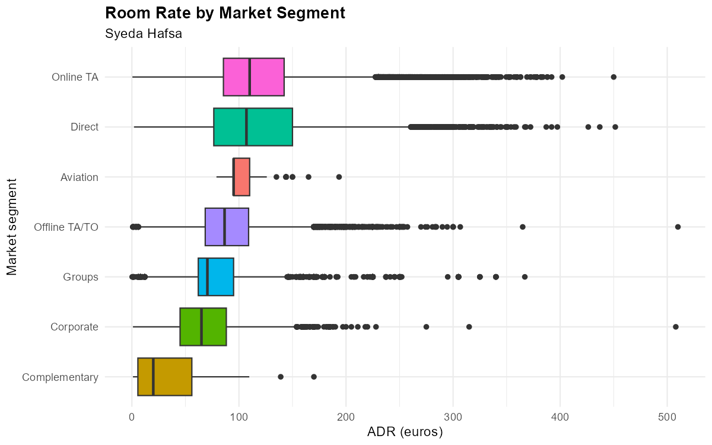
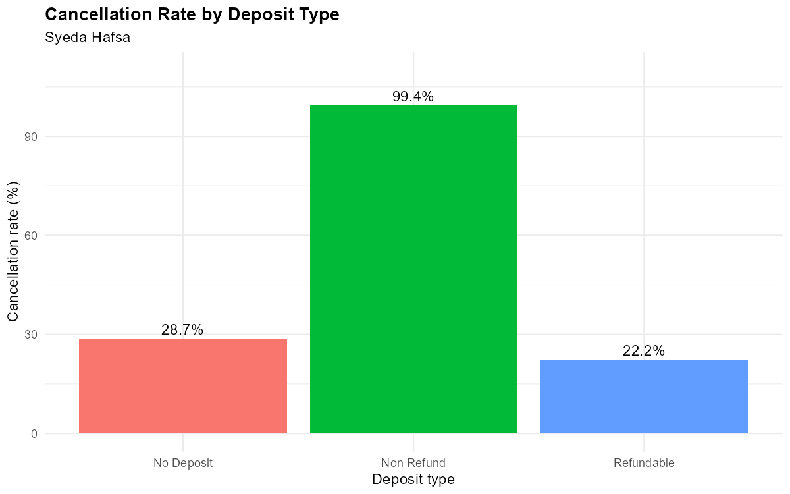
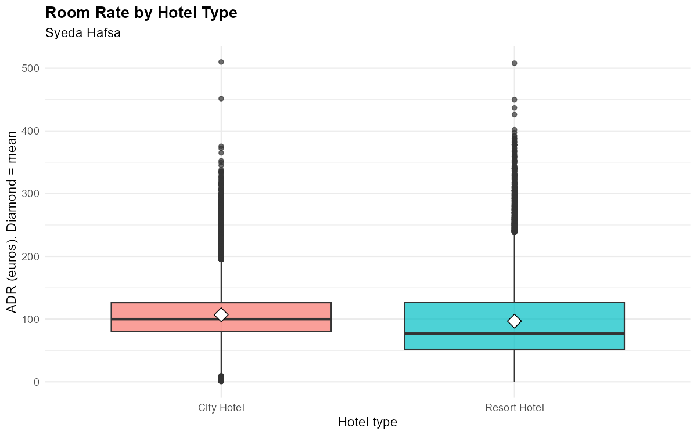
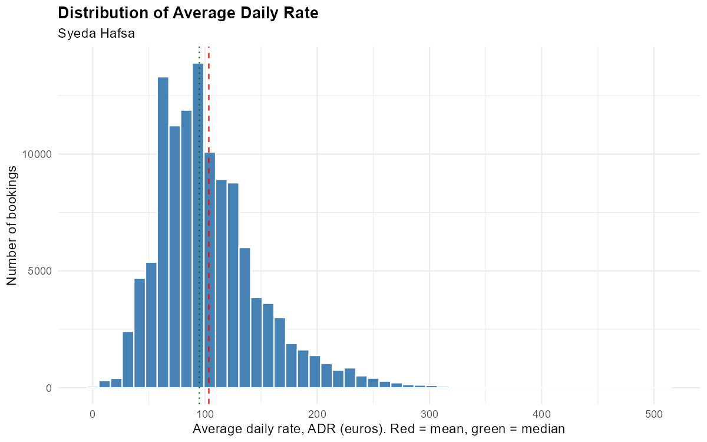
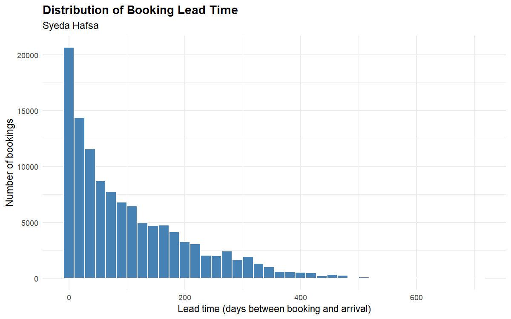
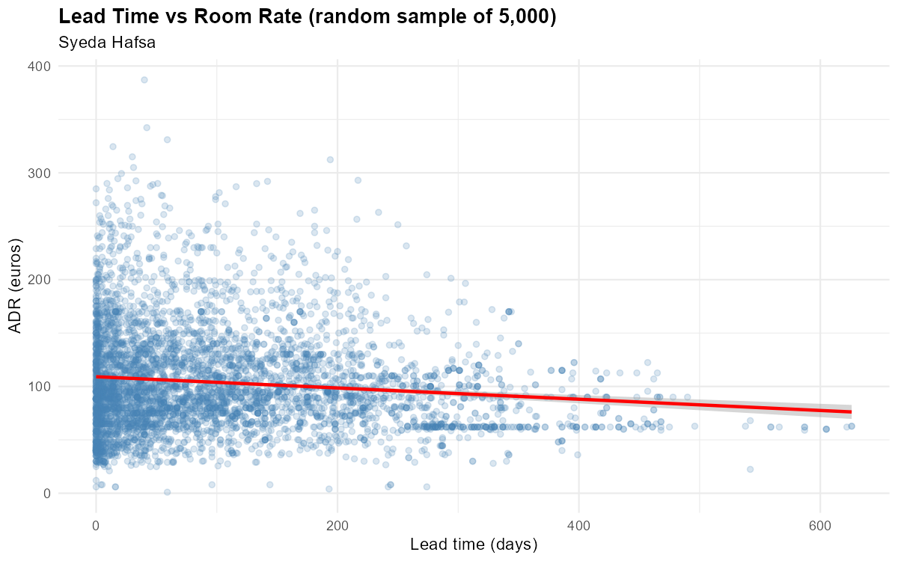
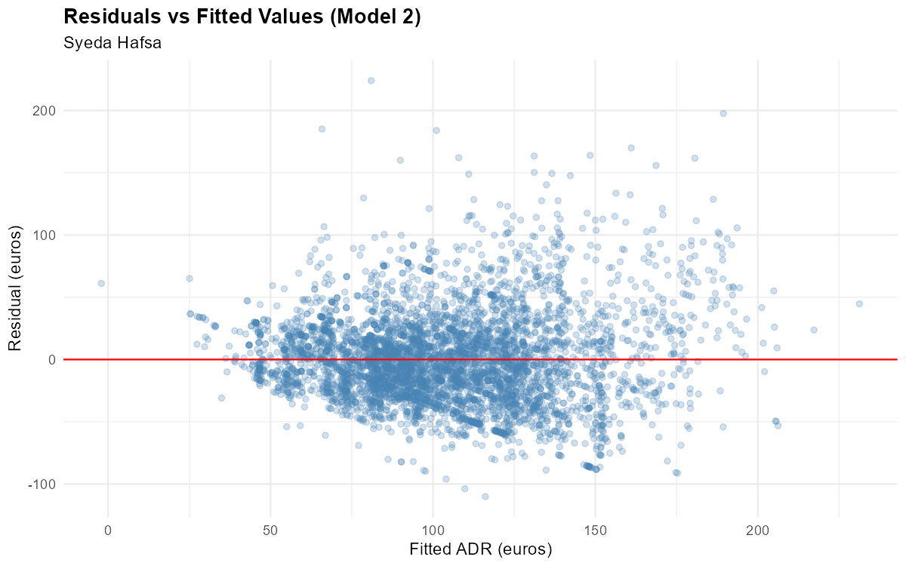
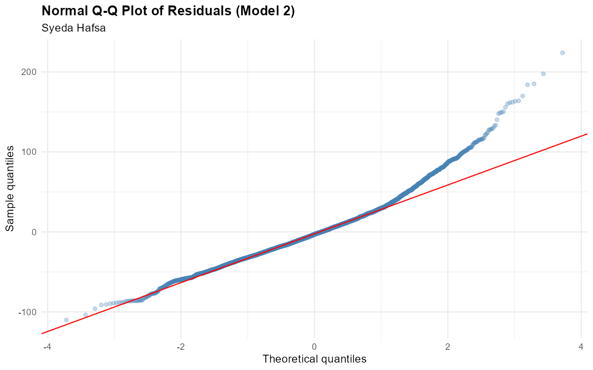

Case study · Statistics · Data analytics
What sets the price of a hotel room, and who cancels?
An MSc statistics project in R on 119,390 bookings from two Portuguese hotels, one in a city and one at a resort. It covers cleaning, four hypothesis tests with effect sizes, and an executive memo for a (hypothetical) CEO.
R said zero missing values. R was being very polite.
The problem
A hotel room is perishable: an empty room tonight can't be sold tomorrow. Managers have to set prices and plan for cancellations at the same time. About 37.5% of the cleaned bookings here were cancelled. Which booking features really go with price and with cancellation, and which only look significant because the dataset is huge?
The data, and the gaps R couldn't see
The data is the Hotel Booking Demand dataset (Antonio et al. 2019) from the TidyTuesday repository: 119,390 bookings described by 32 variables, including room rate (ADR), lead time, stay length, party size, market segment, deposit type and cancellation.
My first missing-value check said only 4 rows had gaps. That seemed too tidy, and the first rows of agent and company contained the word NULL. The file stores missing values as the text "NULL", which is.na() does not count. Counting the text itself revealed about 129,000 hidden gaps.
Cleaning decisions, each with a reason
- Dropped the agent and company columns rather than deleting rows. Neither was needed for the objectives, and imputing them would have invented information.
- Excluded a €5,400 rate as an entry error (more than ten times the next value). Kept €510, because the top rates form a gradual tail consistent with peak-season rooms.
- Excluded 1,960 zero or negative rates, because I couldn't tell free stays from missing prices. Conclusions therefore describe paid stays only.
- Removed bookings with no guests, zero nights, an "Undefined" segment or a missing child count. With overlaps, 1,996 rows (1.7%) went, leaving 117,394.
What I did
- DescribeDistributions of rate, lead time, stay length and party size by hotel; medians beside means, because both are right-skewed.
- Compare groupsWelch t-test (city vs resort rate) and one-way ANOVA, with a Welch ANOVA check and Tukey post-hoc tests across seven market segments.
- Test associationChi-square test of deposit type against cancellation, with Cramér's V.
- ModelCorrelation, then three regression models for room rate, with residual diagnostics. α = .05, effect sizes reported throughout.
Results
| Question | Test | Result | Effect size |
|---|---|---|---|
| Is the city hotel dearer? | Welch t-test | City €106.89 vs resort €96.77 (≈ €10 more), p < .001 | d = 0.22 (small) |
| Does market segment matter? | ANOVA, Welch ANOVA, Tukey | 20 of 21 segment pairs differ; only Direct vs Online TA are alike | η² = .141 (≈ 14% of rate variation) |
| Is deposit type linked to cancelling? | Chi-square | 99.4% of Non Refund bookings cancelled vs 28.7% with no deposit | Cramér's V = .48 |
| How much of the rate can we explain? | Multiple regression | Adding month, then a hotel × month interaction | Adjusted R² .223 → .414 → .551 |
Cancellation rate by deposit type
Share of bookings cancelled. The non-refundable result runs opposite to intuition, and the data can't say why.
How much of the room rate each model explains
Adjusted R². Season (arrival month) and each hotel's own seasonal pattern do most of the lifting.
How much less each segment pays than Online TA
Mean nightly rate gap in euros (Tukey). Direct bookings pay the same as Online TA (€0.28, p = .995).
The charts, straight from R
Every chart below comes from R/hotel_analysis.R in the repo (ggplot2), run on the full cleaned data. Re-running the script gives exactly these charts and the same test results as the report.







Show the regression diagnostics


From statistics to a CEO memo
translating p-values into English: a skill and a half.
The project ended with a one-page memo to the CEO of a hypothetical two-hotel group. It explains "statistically significant" in plain words and makes six recommendations:
- Price by season, starting at the resort. Its mean rate swings from about €50 in winter to about €188 in August, while the city hotel stays within roughly €84 to €123.
- Don't rely on a flat "city premium". The ≈ €10 gap is small and partly reflects when guests stay.
- Grow direct bookings and review channel discounts. Direct pays the same as online agencies, while groups pay about €37 less and corporate accounts about €48 less.
- Treat non-refundable bookings with caution. Audit how they are recorded and don't count them as secure revenue until that's understood.
- Price for the number of guests. Each extra guest adds about €27 a night, the strongest driver in the model.
- Don't over-invest in lead-time pricing. Booking 100 days earlier lowers the rate by only about €10.5, and the link is very weak (r = −.09).
What I learned
- Question a clean-looking summary. The "NULL" text hid over 129,000 gaps from the standard check. Now I count suspicious strings as well as NAs.
- Significance is cheap in big data. Lead time and rate correlate at p < .001, yet explain under 1% of rate variation. Effect sizes decide what matters.
- Write down why, not just what. A data diary of every cleaning choice made the analysis easy to defend and easy to repeat.
Limitations and next steps
- Observational data from two hotels: these are associations, not causes.
- Residuals fan out as the fitted rate grows, so equal variance and normality are only partly met. Standard errors should be read with care.
- The best model still leaves 45% of rate variation unexplained; room type, competitor prices and local events aren't recorded.
- Next: logistic regression to model cancellation directly, and robust standard errors or a time-series model for the uneven residuals.